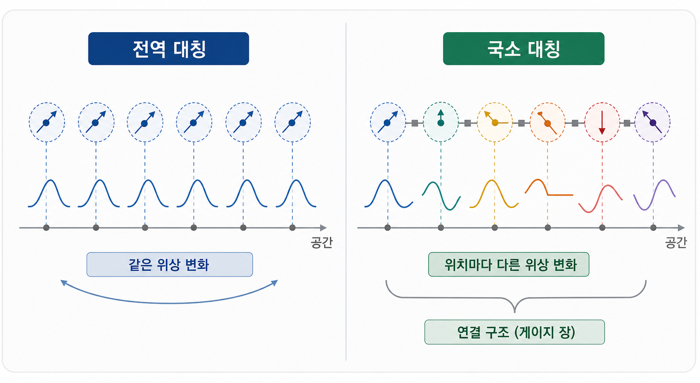
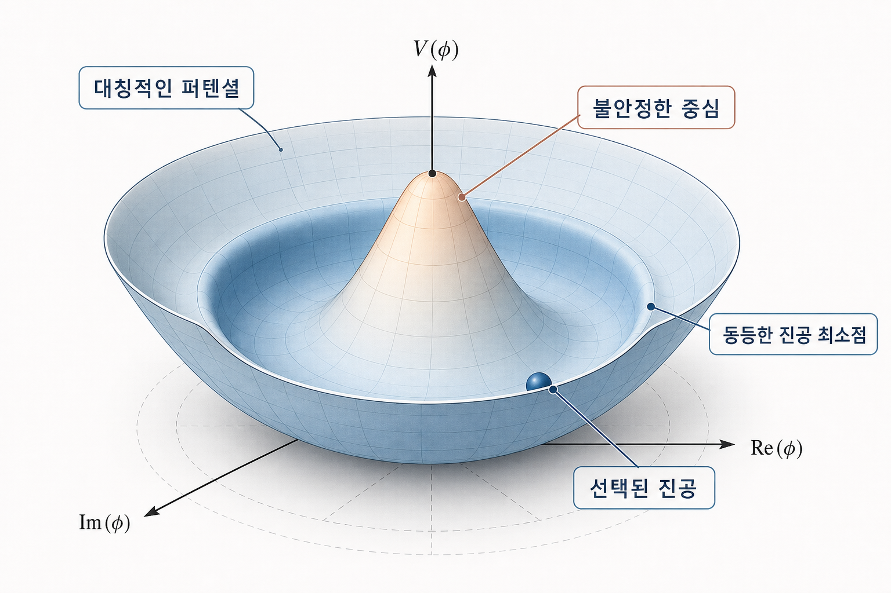

제5장: 게이지 대칭성과 표준 모형 — 보이지 않는 힘을 조각하는 대성당의 설계도
1. 눈에 보이는 대칭 vs 느껴지지 않는 대칭
앞선 장들에서 우리는 공간 회전이나 시간의 평행이동처럼 시공간에 직접 드러나는 대칭을 다뤘습니다. 하지만 자연에는 좌표를 돌리거나 시간을 미는 것과는 다른 종류의 대칭이 있습니다. 입자의 위치는 그대로 둔 채, 그 상태를 기술하는 복소 위상이나 내부 자유도를 변환해도 물리 결과가 바뀌지 않는 경우입니다. 이것이 내부 대칭(internal symmetry)의 시작입니다.
가장 단순한 예는 양자역학의 파동함수입니다. 전체 위상을
처럼 한꺼번에 바꾸어도 관측 가능한 물리량은 변하지 않습니다. 이런 전역 위상 대칭은 이미 익숙한 사실입니다. 그런데 요구를 더 강하게 만들 수 있습니다. 위상 $\alpha$를 상수가 아니라 위치마다 다른 함수 $\alpha(x)$로 바꾸어도 이론이 여전히 같은 물리를 말하도록 만들 수 있을까? 바로 이 요구가 게이지 대칭(gauge symmetry)입니다.
이 조건을 만족시키려면 보통의 미분 $\partial_\mu$만으로는 부족하고, 이를 보정하는 게이지 장이 함께 등장해야 합니다. 전자기학에서는 이것이 전자기 퍼텐셜 $A_\mu$이고, 양자화하면 광자와 연결됩니다. 같은 아이디어가 더 복잡한 비가환 게이지군으로 확장되면 약력의 $W/Z$ 보존과 강력의 글루온이 등장합니다. 힘이란 더 이상 "그냥 주어진 상호작용"이 아니라, 국소 대칭을 유지하려는 이론의 구조적 요구로 읽히기 시작합니다.
여기서 한 번 멈춰서 생각해 보자. 왜 국소 위상 변환은 단순한 재표현이 아니라 실제 장을 요구하는가? 핵심은 미분에 있습니다. 파동함수 자체는 위상 변화 아래 단순히 상수배처럼 변하지만, 위치에 따라 위상이 달라지면 미분한 양은 그 변화를 그대로 감지해 버립니다. 즉, $\partial_\mu \psi$는 더 이상 원래와 같은 방식으로 변환하지 않습니다. 이 불균형을 보정하기 위해 우리는 공변미분(covariant derivative)라는 새로운 연산을 도입합니다.
기호로 쓰면 대략
같은 구조가 등장합니다. 여기서 중요한 것은 세부 상수보다 형태입니다. 단순한 미분 대신, 장 $A_\mu$를 함께 포함한 미분을 쓰면 국소 위상 변화 아래에서도 전체 식의 형태를 유지할 수 있습니다. 즉, 대칭을 지키려는 요구가 새로운 장을 부른다는 말은 단순한 수사가 아니라 실제 계산 규칙의 변화입니다.
전자기학에서는 이 장이 비교적 온순합니다. 서로 다른 변환이 서로 방해하지 않는, 즉 교환 가능한 아벨 군 U(1)의 경우이기 때문입니다. 하지만 약력과 강력은 더 복잡합니다. 여기서는 변환끼리 순서를 바꾸면 결과가 달라지는 비가환(non-abelian) 군이 등장하고, 그 결과 게이지 장들끼리도 스스로 상호작용하게 됩니다. 광자는 전하가 없어서 자기 자신과 직접 결합하지 않지만, 글루온은 색전하를 지니기 때문에 서로 얽힙니다. 이 차이는 힘의 성격을 완전히 갈라놓습니다.
1.5 비가환 대칭의 숲
비가환 게이지 이론은 표면적으로는 기호만 더 복잡해진 것처럼 보이지만, 물리적으로는 훨씬 풍부한 구조를 만들어 냅니다. U(1) 대칭이 하나의 위상 자유도와 연결된다면, SU(2)와 SU(3)는 더 큰 내부 공간의 회전을 다룹니다. 그래서 약한 상호작용과 강한 상호작용은 전자기학보다 훨씬 다양한 종류의 장과 결합 구조를 가집니다.
이를 직관적으로 말하면 이렇습니다. 전자기학에서는 입자가 "한 방향의 위상 바늘"을 들고 다니는 셈이지만, 비가환 게이지 이론에서는 입자가 내부 공간 속에서 더 복잡한 방향 정보를 지닙니다. 그리고 그 방향을 한 점에서 다른 점으로 옮길 때, 단순한 차이분만으로는 부족합니다. 어떤 기준으로 비교할지를 정해 주는 연결(connection)이 필요하고, 게이지 장이 바로 그 역할을 합니다.
이 때문에 게이지 이론은 단순히 힘을 기술하는 기술적 형식이 아니라, 서로 다른 지점의 내부 상태를 일관되게 비교하는 기하학으로 읽힙니다. 미분기하학의 언어로 가면 이 이야기는 섬유다발과 연결의 언어가 되지만, 여기서는 이 직관만 붙잡아도 충분합니다. 자연의 힘은, 내부 자유도를 공간 전체에 걸쳐 일관되게 운반하려는 규칙에서 태어난다는 것입니다.

2. 질량은 대칭이 깨진 대가: 힉스 메커니즘
문제는 여기서 시작됩니다. 게이지 대칭을 노골적으로 깨는 질량항을 그냥 써 넣으면 이론의 아름다운 구조가 망가지기 쉽습니다. 특히 약한 상호작용을 매개하는 게이지 보존은 실험적으로는 질량을 가져야 하는데, 이론은 질량 없는 장을 더 자연스럽게 선호하는 듯 보였습니다.
해결책은 "방정식의 대칭"과 "진공의 모양"을 구분하는 데 있었습니다. 라그랑지언 자체는 대칭적이지만, 진공 상태가 그 대칭을 그대로 드러내지 않을 수 있습니다. 이것이 자발적 대칭 깨짐(spontaneous symmetry breaking)입니다. 1960년대 힉스(Higgs), 브라우트-엥글레르, 구랄닉-하겐-키블 등은 바로 이 아이디어를 게이지 이론에 적용했습니다.
핵심 그림은 이렇습니다. 힉스 장의 퍼텐셜은 대칭적이지만, 에너지가 가장 낮은 상태는 꼭대기가 아니라 어떤 기울어진 골짜기 위에 놓입니다. 이때 진공이 특정한 값을 선택하면, 원래는 질량이 없던 게이지 장 일부가 그 자유도를 "흡수"해 질량을 얻게 됩니다. 흔히 "입자가 힉스 장과 상호작용해서 질량을 얻는다"라고 말하지만, 더 정확히는 전기약 이론의 대칭 구조와 진공의 선택이 결합되어 질량항이 효과적으로 나타난다고 이해하는 편이 좋습니다.
이 과정을 직관적으로 요약하면 다음과 같습니다.
- 방정식 자체는 여전히 대칭적이다.
- 하지만 진공은 그 대칭을 완전히 드러내지 않는 한 상태를 고른다.
- 그 결과 일부 자유도는 물리적으로 드러나는 질량항으로 재배열된다.
이 점은 아주 중요합니다. 대칭이 "깨졌다"고 말할 때, 실제로 부서지는 것은 자연 법칙 그 자체가 아니라 진공의 배치입니다. 그래서 자발적 대칭 깨짐은 무질서의 상징이 아니라, 오히려 더 풍부한 현상이 나타나는 출구입니다. 강자성체에서 자화 방향이 저절로 선택되는 일과 비슷한 직관을 떠올리면 좋습니다. 방정식은 회전 대칭적이지만, 실제 자석은 한 방향을 고릅니다.

2.5 표준 모형이라는 설계도
이제 퍼즐 조각을 한 번에 놓아 보자. 현대 입자물리학의 표준 모형은 대략
라는 대칭 구조 위에 세워져 있습니다. 여기서
SU(3)_C는 강한 상호작용의 색대칭,SU(2)_L \times U(1)_Y는 전기약 상호작용의 대칭
과 연결됩니다.
이 식은 한 줄짜리 기호이지만, 그 안에는 엄청난 내용이 들어 있습니다. 쿼크와 렙톤이 어떤 다중항을 이루는지, 어떤 게이지 보존이 어떤 상호작용을 매개하는지, 대칭이 어떻게 깨진 뒤 우리가 익숙한 광자와 W^\pm, Z^0가 나타나는지가 모두 이 구조 속에 들어 있습니다.
물론 독자가 이 단계에서 표준 모형의 라그랑지언 전체를 외울 필요는 없습니다. 중요한 것은 감각입니다. 표준 모형은 입자 목록의 백과사전이 아니라, 몇 개의 대칭 원리와 그 깨짐 방식으로 거대한 실험 사실들을 묶어 내는 압축된 문장이라는 점입니다. 뇌터가 보존 법칙의 문법을 열었고, 갈루아와 위그너가 대칭 구조의 언어를 정교하게 다듬었으며, 디랙과 전기약 이론이 이를 밀어붙인 끝에 마침내 이 문장 하나가 등장한 것입니다.
구조를 표로 보면 다음과 같습니다.
| 군 | 상호작용 | 매개 입자 | 관련 자유도/물질장 | 비고 |
|---|---|---|---|---|
SU(3)_C | 강한 상호작용 | 글루온 | 쿼크의 색전하 | 비가환 게이지 이론 |
SU(2)_L | 약한 상호작용의 일부 | W^1, W^2, W^3 | 왼손잡이 페르미온 이중항 | 자발적 대칭 깨짐 전 단계 |
U(1)_Y | 초전하 대칭 | B 장 | 초전하 | SU(2)_L와 섞여 광자와 Z를 형성 |
즉, SU(3)_C × SU(2)_L × U(1)_Y는 표준 모형의 기본 대칭 구조이며, 힉스 장의 진공기댓값 이후 우리가 관측하는 광자, W, Z, 글루온의 구조로 재조직됩니다.
전기약 이론의 가장 아름다운 장면은 바로 여기서 나옵니다. 대칭이 깨지기 전에는 SU(2)_L의 세 게이지 장과 U(1)_Y의 한 게이지 장이 따로 존재합니다. 하지만 힉스 장이 진공기댓값을 갖게 되면 이 장들은 서로 섞여, 우리가 실험에서 보는 실제 입자 상태로 재조직됩니다. 그 결과
- 두 개의 조합은 전하를 띤
W^+,W^-, - 하나의 조합은 중성
Z^0, - 또 하나의 조합은 질량 없는 광자
\gamma
가 됩니다.
이것은 단지 이름 바꾸기가 아닙니다. 왜 광자는 장거리 전자기력을 전달할 수 있는 반면, 약한 상호작용은 매우 짧은 거리에서만 작동하는지의 이유가 바로 여기에 있습니다. W와 Z는 무겁기 때문에 그 힘은 짧은 범위에 갇히고, 광자는 질량이 없기 때문에 전자기력은 멀리까지 뻗어 나갑니다. 우리가 일상에서 전자기력은 익숙하게 느끼지만 약력을 직접 체감하지 못하는 이유도 결국 대칭 구조와 질량의 문제입니다.
이 대목에서 독자는 물리학의 한 가지 습관을 배울 수 있습니다. 서로 전혀 다른 현상처럼 보이는 것들을 "같은 이론이 깨진 뒤의 다른 모습"으로 읽는 습관입니다. 전기와 약한 상호작용은 처음부터 별개로 주어진 힘이 아니라, 더 높은 에너지에서는 한 구조의 일부이고 낮은 에너지에서 갈라져 보이는 현상이라는 것입니다. 통일이라는 말이 거창하게 들리더라도, 물리학에서 그것은 종종 겉으로 다른 것을 더 깊은 수준에서 같은 것으로 읽어 내는 일을 뜻합니다.
2.8 표준 모형 바깥의 질문들
여기서 한 가지 중요한 균형 감각이 필요합니다. 표준 모형은 엄청나게 성공한 이론이지만, 그렇다고 모든 것을 끝낸 최종 이론은 아닙니다. 오히려 그 성공이 너무 강력하기 때문에, 무엇을 정확히 설명하고 무엇에서 멈추는지를 함께 보는 태도가 더 중요합니다.
먼저 강한 상호작용 쪽에서는 색전하를 띤 쿼크와 글루온이 왜 홀로 떨어져 나오지 않는가라는 문제가 있습니다. 우리는 이를 색가둠(color confinement)이라는 말로 부르지만, 그 감각을 일상적으로 체험하는 것은 쉽지 않습니다. 이론은 SU(3) 게이지 구조를 통해 강한 상호작용의 문법을 놀랍도록 잘 잡아내지만, 저에너지에서 왜 자유로운 쿼크가 보이지 않는지의 구체적 현상은 여전히 단순한 한 줄 설명으로 끝나지 않습니다. 즉, 대칭 구조는 알고 있어도, 그 구조가 어떤 비선형적 집단 현상으로 응결되는지는 또 다른 깊이의 문제입니다.
또 하나의 대표적 질문은 중성미자 질량입니다. 표준 모형의 가장 압축된 기본형만 놓고 보면, 중성미자는 질량이 없는 것처럼 보입니다. 그러나 중성미자 진동 실험은 서로 다른 중성미자 종류가 섞이며 변환된다는 사실을 보여 주었고, 이는 결국 중성미자가 질량을 가져야 함을 뜻합니다. 즉, 표준 모형은 놀라운 성공을 거두었지만, 실제 자연은 그 틀에 아주 조금의 확장을 요구하고 있습니다.
더 넓게 보면 암흑물질 문제도 있습니다. 은하의 회전 곡선, 중력렌즈, 우주론적 관측은 우주에 우리가 아는 보통 물질보다 더 많은 중력원이 있음을 강하게 시사합니다. 하지만 표준 모형 안의 입자 목록만으로는 그 주역을 깔끔하게 설명하기 어렵습니다. 다시 말해 표준 모형은 우리가 실험실에서 본 입자들의 문법에는 탁월하지만, 우주 전체의 질량 구성을 완전히 닫아 주지는 못합니다.
이 점은 표준 모형의 실패가 아니라, 오히려 그 성공이 어디까지인지 정확히 드러낸다는 뜻입니다. 좋은 이론은 모든 것을 설명한다고 허세를 부리는 이론이 아니라, 자신이 설명하는 범위와 설명하지 못하는 경계를 함께 선명하게 만드는 이론입니다. 표준 모형은 바로 그런 의미에서 위대한 이론입니다. 그것은 많은 질문을 끝냈기 때문이 아니라, 이제 남은 질문이 무엇인지를 더 정교하게 보이게 만들었기 때문입니다.
3. 이휘소, 힉스 입자라는 이름을 짓다
이 메커니즘은 제안 직후 곧바로 실험적 실체를 얻은 것이 아니었습니다. 오랫동안 그것은 "이론을 일관되게 만들기 위해 꼭 필요한 요소"였지만, 직접 보인 적은 없는 존재로 남아 있었습니다. 이 시기 이론물리학자들은 전기약 이론이 정말로 자립 가능한 틀인지, 그리고 그 틀 안에서 대칭 깨짐이 어떤 실험 신호를 남길지 집요하게 분석했습니다.
이 과정에서 이휘소(Benjamin W. Lee)는 전기약 이론과 자발적 대칭 깨짐의 물리적 의미를 정교하게 해석하고 확산시키는 데 중요한 역할을 했습니다. 그가 한 일의 핵심은 단순한 명명 행위라기보다, 수학적 메커니즘을 실제 입자물리학의 언어로 번역하고 실험과 연결 가능한 형태로 다듬는 작업에 가깝습니다. 이론이 살아남으려면 아름답기만 해서는 안 되고, 계산 가능하고 검증 가능해야 합니다. 이 점에서 이휘소는 다리 역할을 했습니다.
2012년 CERN에서 힉스 보손이 발견되었을 때, 확인된 것은 단지 "새 입자 하나"가 아니었습니다. 그것은 게이지 대칭, 자발적 대칭 깨짐, 전기약 통일이라는 거대한 구조가 현실과 맞닿아 있다는 강력한 증거였습니다. 수십 년 동안 버텨 온 대칭의 논리가 마침내 검출기의 신호로 돌아온 순간이었습니다.
실험적으로도 이 순간은 극적이었습니다. 힉스 보손은 눈에 보이는 작은 공처럼 검출기에 찍히는 입자가 아닙니다. 그것은 극히 짧은 시간 존재한 뒤 다른 입자들로 붕괴하고, 실험가는 그 붕괴 산물의 통계적 흔적 속에서 "여기 어딘가에 힉스가 있었다"는 신호를 읽어 냅니다. 두 광자 채널, 네 렙톤 채널 같은 정교한 분석이 쌓여 가며, 배경 잡음 위로 작은 봉우리가 솟아오르는 방식으로 발견이 이루어졌습니다.
이 장면은 상징적입니다. 갈루아의 군, 뇌터의 정리, 위그너의 표현론, 전기약 대칭, 자발적 대칭 깨짐이라는 수십 년의 추상적 구조가 결국 검출기 데이터의 미세한 초과 신호로 응결된 것입니다. 이론과 실험은 여기서 서로를 비추는 거울이 됩니다. 수학적 구조가 너무 아름다워서 믿는 것이 아니라, 그 아름다움이 실제 데이터에서 끝내 모습을 드러냈기 때문에 우리는 그것을 더 깊이 신뢰하게 됩니다.
4. 21세기 생성의 은유
힉스 메커니즘이 강렬한 인상을 남기는 이유는, 보이지 않는 배경 구조가 눈앞의 성질을 결정한다는 점 때문입니다. 우리가 직접 보는 것은 입자의 질량, 붕괴, 충돌 산물 같은 현상이지만, 그 뒤에는 진공의 구조와 대칭의 선택이라는 더 깊은 층이 숨어 있습니다. 이 점에서 힉스 이야기는 현대 과학 전체를 관통하는 하나의 태도를 보여 줍니다. 보이는 현상만 나열하는 데서 멈추지 않고, 무엇이 그 현상을 가능하게 하는 배경 구조인가를 묻는 태도 말입니다.
표준 모형은 바로 그런 질문의 승리입니다. 힘과 입자를 따로 외우는 대신, 어떤 대칭이 허용되고 어떤 대칭이 깨지는지를 묻는 순간 자연은 훨씬 덜 산만해집니다. 대칭은 장식이 아니라 설계도이고, 힉스는 그 설계도에서 비어 있던 마지막 방 하나를 채운 존재였습니다.